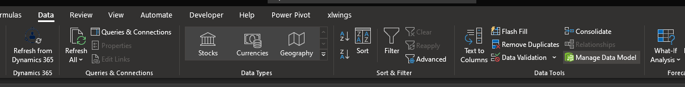
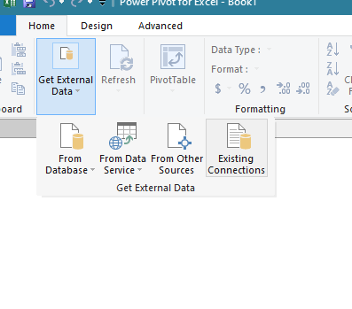
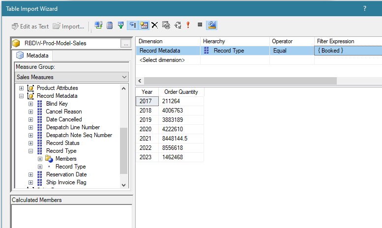

if (interactive() && !reticulate::virtualenv_exists(getwd())) {
resp = readline(paste("No python env in", getwd(), "to install enter y, or press enter to continue /n \n"))
if (grepl("y", resp)) {
reticulate::virtualenv_create(getwd())
reticulate::virtualenv_install(getwd(), c("pandas", "pyadomd"))
} else {
message("python env required for cube queries. SQL tables unaffected")
}
}Accessing Data Cubes
At the core of a lot of Rocky Brands research is reliance on the old sales cube methods for data aggregation. This setup requires at least familiarity with the MDX language, the use of some python libraries for interacting with the ADOMD client, and a few more steps that are generally unpalatable. This post will go into how to get programmatic access to this MS proprietary tool in R, and cover the basics of the package lehighCube developed to ease the process.
System Requirements
You’ll have to do this on a Windows machine unfortunately, as you’ll need some of the MS drivers installed to interact with the drivers. Your first requirements are the ADOMD and MSOLAPx86 drivers. You can find those here. Additionally you’ll need to use the python library Pyadomd.
Python Virtual Env
To make a cube connection, it’s recommended that a project calling such get its own venv to call with. You absolutely can make a global venv for this tool, but for the sake of the author, I just create a new environment to contain each project. If you go thr route of the lehighCube package, you can simply call lehighCube::py_env() and follow the prompts. Otherwise, assuming RStudio you’ll want to go through the reticulate route. I will simply copy and paste the py_env source below as it should be a comprehensive guide to setting up a project folder.
If in RStudio go to Tools > Project Options > Python and select the proper interpreter.
MDX
MDX is cool for what is does, but a pain in the ass for what it doesn’t. The worst part is that Microsoft wants you to pay them to learn how to use the tool they built that you pay them to use, so documentation is sparse. In addition it’s an old technology that has largely fallen out of favor for analytics so the forum posts and the like tend to be very old. If you run into a real problem, I suggest opening Excel and using PowerQuery to build the MDX string, then editing from there.
Se below for a workflow:
Select Manage Data Model in Excel under the Data tab. 
Use Get Extternal Data, Ioften use Existing Connections to find your cube.

Go to Next > Design
And now build your table. Be sure to pick the proper measure group.

Hot OK and you have your query string.
I included a function mdx_string() in the lehighCube package. If given no args it will take the clipboard as input. Otherwise, give it the string. The idea is to clean up and give sensible formatting.
Below for before formatting:
SELECT NON EMPTY { [Measures].[Order Quantity] } ON COLUMNS, NON EMPTY { ([Order Date].[Year].[Year].ALLMEMBERS ) } DIMENSION PROPERTIES MEMBER_CAPTION, MEMBER_UNIQUE_NAME ON ROWS FROM ( SELECT ( { [Record Metadata].[Record Type].&[Booked] } ) ON COLUMNS FROM [RBDW-Prod-Model-Sales]) WHERE ( [Record Metadata].[Record Type].&[Booked] ) CELL PROPERTIES VALUE, BACK_COLOR, FORE_COLOR, FORMATTED_VALUE, FORMAT_STRING, FONT_NAME, FONT_SIZE, FONT_FLAGSAnd after formatting
SELECT NON EMPTY
{
[Measures].[Order Quantity]
} ON COLUMNS
, NON EMPTY
{
(
[Order Date].[Year].[Year].ALLMEMBERS
)
} ON ROWS FROM
(
SELECT
(
{
[Record Metadata].[Record Type].&[Booked]
}
) ON COLUMNS FROM [RBDW-Prod-Model-Sales]
) WHERE
(
[Record Metadata].[Record Type].&[Booked]
)The general flow of a query is to give sets of lists of lists. My advice is to ignore the concept of rows and columns and where clauses. They’re trash. Instead think of dimenstions as grouping variables. i.e.
select
(
measures.[sales quantity]
)
on 0,
non empty
{
(
[Customer Properties].[Customer Name].allmembers
, [Customer Properties].[Customer Region].allmembers
)
}
on 1,
non empty
{
(
[Order Date].[Year].allmembers
)
}
on 2
from [the_cube]